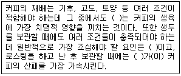
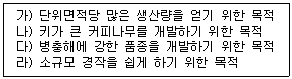
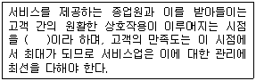
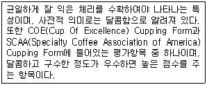
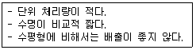
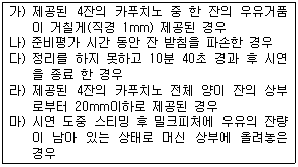

바리스타-2급 (2011-06-11 기출문제)
1과목: 커피학 개론
1. 다음 중 커피와 관련된 설명으로 옳은 것은?
- “아∼ 맛있는 커피. 천 번의 키스보다 황홀하고, 무스카텔(Muscatel) 포도주보다 달콤하다.” 라고 말한 사람은 베토벤이다.
- 커피는 16세기 경 아프리카의 고원에서 ‘칼디’라는 목동에 의해 인류에게 전해졌다.
- 모카(Mocha)는 아프리카에서 생산되는 모든 커피를 총칭한다.
- 커피는 초기에 생 체리를 발효시켜 술로 이용하다가, 차츰 말린 커피가루를 곡식가루와 기름을 섞어 구급약이나 비상식량으로 사용하였다.
(정답률: 57%)

2. 다음의 커피체리에 관한 내용 중 틀린 것은?
- 성숙한 커피 열매는 색이나 형태가 체리와 비슷해서 ‘Cherry’, ‘Coffee cherry’ 라고 불린다.
- 일반적으로 체리의 껍질 안쪽에 과육이 있고, 과육 안쪽으로 속껍질 안에 두 개의 생두가 마주보듯 들어 있다.
- 커피 생두는 한 체리에 보통 두 개가 서로 마주보는 형태로 자리 잡지만 간혹 세 개 이상 들어있는 경우도 있다.
- 가지 끝에 열리는 체리에는 생두가 하나만 들어 있는 경우도 있는데, 이런 체리를 피베리(Peaberry)라고 부른다.
(정답률: 65%)
3. 다음 중 커피 체리가 완전히 성숙하면 노란색으로 변하는 품종은?
- 아마레로
- 켄트
- 로부스타
- 카투라
(정답률: 49%)
4. 다음 중 서로 잘못 연결된 커피 품종은?
- 티피카(Typica) - 아라비카 원종에 가장 가까운 품종
- 카투라(Caturra) - 인도의 고유 품종
- HdT(Hibrido de Timor) - 아라비카와 로부스타의 교배종
- 카티모르(Catimor) - 카투라(Caturra)와 HdT(Hibrido de Timor)의 교배종
(정답률: 69%)
5. 다음 중 아라비카 종에 대한 설명으로 부적합한 것은?
- 15-24℃의 기온, 1,500-2,000mm의 연평균 강우량과 적절한 일조량을 필요로 한다.
- 원산지는 에티오피아(Ethiopia)로 1753년 스웨덴 식물학자 칼 폰 린네(Carl von Linne)에 의해 처음으로 학계에 등록되었다.
- ‘커피나무의 귀족’ 이라고도 불리며, 2쌍의 염색체를 갖고 꽃이 핀 후 11개월이 지나서야 커피체리가 빨갛게 익는다.
- 가장 많이 알려진 품종으로 티피카(Typica)와 버번(Bourbon)이 있으나, 커피 재배가 확대되면서 카투라(Caturra), 문도 노보(Mundo Novo), 카투아이(Catuai) 등 품종도 다양해졌다.
(정답률: 74%)
6. 생두의 가운데 골처럼 파인 부분의 명칭은 무엇인가?
- 파치먼트(Parchment)
- 센터 컷(Center cut)
- 외피(Outer skin)
- 과육(Pulp)
(정답률: 89%)
7. 다음 설명 중 옳은 것은?
- 몬순커피로 유명한 것으로 인도의 Malabar AA가 있다.
- 롱베리(Longberry)는 기형 생두의 일종이며 체리 속에 생두가 한 개밖에 없다.
- 피베리(Peaberry)는 그해 생산된 생두를 지칭한다.
- 패스트 크롭(Past crop)은 수확 한지 2년 이상 된 생두를 말한다.
(정답률: 64%)
8. 다음 내용 중에 로부스타(Robusta)종과 관련이 있는 것은 무엇인가?
- 로부스타는 1895년도에 발견되어 학계에 보고되었으며, 원산지는 에티오피아로 알려져 있다.
- 염색체 수는 아라비카종보다 많은 44개이다.
- 체리 숙성기간은 아라비카종보다 길며, 약 9~11개월 정도이다.
- 주요 생산 국가는 베트남, 인도네시아, 콜롬비아 등이다.
(정답률: 62%)
9. 커피 재배에 관한 설명으로 바르지 못한 것은?
- 커피 경작지는 배수가 잘 되고 미네랄이 적당히 함유된 토양이 좋다.
- 바나나 등 다른 농작물과 함께 심거나 다른 농작물과 번갈아가며 커피 농사를 짓기도 한다.
- 아라비카 종은 열대, 아열대 지역의 고도 약 800-2,000m, 연평균기온 약 15-24℃인 지역에서 재배된다.
- 아라비카 종은 로부스타 종보다 나쁜 환경에 더 잘 견디고 질병에도 강하여 재배를 위한 유지비용이 저렴하다.
(정답률: 66%)
10. 열대와 아열대지역으로 커피를 재배하기에 적합한 조건으로 알려져 있는 커피 벨트(Coffee Belt) 혹은 커피 존(Coffee Zone)의 범위는?
- 남위 30° - 북위30°
- 남위 25° - 북위25°
- 남위 20° - 북위25°
- 남위 25° - 북위20°
(정답률: 85%)
11. 다음 중 커피에 관하여 올바르게 설명한 것은?
- 나뭇잎의 양면은 약간 두꺼우면서 반짝거리는 윤기가 있다.
- 찬바람, 건조하고 뜨거운 바람, 약간의 서리는 커피 재배에 매우 좋다.
- 커피나무는 껍질이 회백색이며, 다 자라면 키가 최대 1.5-2m 정도 된다.
- 씨앗을 뿌린 후 3년 이상 지나야 수확이 가능하다.
(정답률: 58%)
12. 다음 지문의 ( )에 가장 적합하게 들어갈 말은?

- 강수량, 습도, 온도
- 서리, 온도, 산소
- 서리, 습도, 산소
- 강수량, 온도, 습도
(정답률: 71%)
13. 다음의 커피에 관한 여러 기술 중 올바르게 설명된 것은?
- 아라비카(Arabica), 카네포라(Canephora)와 같은 커피의 종(Species)들은 모 두 아프리카에서 기원하였다.
- 커피는 통상 백(Bag)에 담겨 보관, 유통되는데 커피 생산국들은 모두 60Kg 단위의 백(Bag)을 사용한다.
- 브라질에서 생산되는 커피는 모두 내추럴 커피(Natural coffee)이다.
- 결점두(Defect bean)의 종류와 명칭은 커피 생산국 모두가 통일된 기준을 사 용한다.
(정답률: 51%)
14. 커피종자를 개량하는 목적으로 옳게 묶은 것은?

- 가), 나)
- 나), 다)
- 다), 라)
- 가), 다)
(정답률: 76%)
15. 커피체리를 수확하는 방법 중 스트리핑(Stripping)방식에 대한 설명 가운데 틀린 것은?
- 핸드 피킹(Hand-picking) 방식에 비해 인건비 부담이 적다.
- 나뭇잎 등의 이물질이 섞일 가능성이 크다.
- 워시드 커피(Washed coffee)를 생산하는 지역에서 주로 사용하는 수확 방법이다.
- 가장 중요한 것은 수확시기 결정이다.
(정답률: 65%)
16. 다음은 커피 체리를 가공하는 방식에 관한 내용 중 옳은 것은?
- 커피체리를 가공하는 방식은 습식법(Wet processing), 건식법(Dry processing), 펄프드 내추럴(Pulped natural) 등이 있다.
- 일반적으로 습식법(Wet processing) 가공 커피는 결점두들이 섞여 있을 가능성이 높다.
- 습식법(Wet processing)은 커피 체리를 물로 씻은 다음 건조시킨 후 파치먼트를 제거하는 방식이다.
- 건식법(Dry processing)은 파치먼트를 제거한 후 씨앗을 다시 세척하여 건조시키는 방식이다.
(정답률: 70%)
17. 커피 가공과정에서 생두 크기에 의한 선별 작업을 무엇이라 부르는가?
- Hulling
- Screening
- Polishing
- Cleaning
(정답률: 69%)
18. 커피는 가공 단계 별로 명칭이 다양한 데 그 중 파치먼트 커피(Parchment coffee)에 대한 올바른 설명은?
- 수확하고 아직 가공되지 않은 상태의 체리를 말한다.
- 커피 체리에서 외피와 과육을 제거한 상태를 말한다.
- 탈곡에 들어가기 직전, 내과피가 남아있는 상태의 커피를 말한다.
- 건조까지 마치고 탈곡을 한 후 얻어진 생두 상태를 말한다.
(정답률: 44%)
19. 내추럴 커피(Natural coffee)와 워시드 커피(Washed coffee)의 특성에 대한 설명 가운데 잘못된 것은?
- 내추럴 커피(Natural coffee)는 생산단가가 싸고 친환경적이다.
- 워시드 커피(Washed coffee)는 일반적으로 품질이 높고 균일하다.
- 내추럴 커피(Natural coffee)는 단맛이 강하게 나타나는 편이며 복합적인 맛을 느낄 수 있다.
- 워시드 커피(Washed coffee)는 신맛이 좋으며 향이 좋고 일반적으로 바디(Body)가 강하다.
(정답률: 64%)
20. 수확한 체리의 가공, 건조방법으로 올바른 설명은?(문제 오류로 실제 시험장에서는 모두 정답 처리되었습니다. 여기서는 1번을 누르시면 정답 처리 됩니다.)
- 수확한 커피의 가공 방식은 크게 건식법(Dry processing)과 습식법(Wet processing)이 있다.
- 체리의 함수율이 20% 정도가 될 때까지 2-3주간 말리는데, 햇볕이 약하거나 습도가 높은 지역에선 4주까지도 건조시킨다.
- 습식법(Wet processing)은 수확한 체리에서 이물질을 바람에 날려 제거한 다음 체리를 펼쳐놓고 자주 뒤집어가며 햇볕에 말린다.
- 건식법(Dry processing)은 비용이 많이 드는 습식법(Wet processing)에 비해 훨씬 경제적이고, 커피의 품질이 좋아 브라질 아라비카 전체 생산량의 95%가 이 방법을 사용한다.
(정답률: 78%)
21. 다음 중 Peaberry에 대한 설명으로 옳은 것은?
- 언어권에 따라 “Caracol", “Caracoli", "Caracolillo"라고도 불린다.
- 일반 콩과 품질이 비슷하나 크기는 Screen size 15 이상이다.
- 커피체리 안에 한 개의 콩이 있는 경우로 현재 저급 커피로 인식되고 있다.
- Peaberry의 발생원인은 유전적 결함, 잘못된 건조과정 또는 의도적인 품종개량 등이다.
(정답률: 55%)
22. 커피 생두의 스크린 사이즈(Screen size) 단위에 대하여 올바른 것은?
- 1/44 inch
- 1/54 inch
- 1/64 inch
- 1/74 inch
(정답률: 76%)
23. 커피와 관련된 용어 중 ‘핸드 소팅(Hand Sorting)’은 무엇을 말하는가?
- 손을 이용하여 생두의 크기를 측정하는 작업
- 생두에 포함된 결점두(Defect bean)를 제거하는 작업
- 생두의 센터컷(Center cut)의 상태를 조사하는 작업
- 손으로 익은 체리만을 골라 따는 수확방법
(정답률: 62%)
24. 커피 생두의 등급을 정하기(Grading) 위해 고려되어야 하는 조건이 아닌 것은?
- 생두의 크기
- 생두의 밀도
- 생두의 함수율
- 생두의 수확시기
(정답률: 63%)
25. 커피를 분류하는 방법이 다른 세 나라와 다른 국가는?
- 콜롬비아
- 과테말라
- 온두라스
- 엘살바도르
(정답률: 58%)
26. 우유를 높은 온도에서 가열할 때 생기는 가열취(加熱臭)의 원인이 되는 유청 단백질은 무엇인가?
- 카제인
- 알파-락트알부민
- 베타-락토글로불린
- 락토페린
(정답률: 76%)
27. 디카페인 커피(Decaffeinated Coffee)에 대한 설명 중 틀린 것은?
- 카페인 제거 방식은 독일에서 가장 먼저 개발하였다.
- 용매추출법은 카페인 이외의 성분도 추출되는 단점이 있다.
- 초임계 추출법으로 카페인의 선택적 추출이 가능하다.
- 가공 과정에서 생두조직에 손상을 입히기도 하지만, 커피향은 손실되지 않는다.
(정답률: 65%)
28. 커피에 첨가되는 설탕과 유지방의 열량비율에 대한 설명 중 옳은 것은?
- 유지방 1g의 열량이 설탕 1g보다 크다.
- 설탕 1g의 열량이 유지방 1g보다 크다.
- 설탕 1g과 유지방 1g의 열량은 동등하다.
- 설탕 1g은 유지방 1g보다 3배 이상의 열량을 가진다.
(정답률: 49%)
29. 아래의 내용 공란에 적합한 용어는 무엇인가?

- 서비스 기대점
- 서비스 순환점
- 서비스 접점
- 서비스 시발점
(정답률: 74%)
30. 커피전문점에서 사용하는 행주를 소독하는 가장 좋은 방법은?
- 살균력이 강한 자외선에서 소독한다.
- 85℃의 열풍에서 15~20분 동안 소독한다.
- 염소계의 차아염소산나트륨 또는 역성비누를 이용하여 소독한다.
- 중성세제에 세척한 후 100℃에서 5분 이상 열탕 소독한다.
(정답률: 73%)
2과목: 로스팅과 향미 평가(커피 배전)
31. 다음은 커피를 로스팅할 때 일어나는 변화를 설명한 것이다. 옳은 내용은?
- 무게가 증가한다.
- 갈변이 일어난다.
- 밀도가 커진다.
- 부피가 줄어든다.
(정답률: 75%)
32. 다음 중 로스팅에 대하여 바르게 설명한 것은?
- 추출을 할 수 있도록 생두에 열을 가해 세포 조직을 분해하여 여러 가지 성분들을 발현시키는 과정이다.
- 로스팅 정도에 따라서 진한 갈색에서 점차 연한 갈색으로 변화하며, 맛과 향도 달라진다.
- 라이트 로스트(Light roast)는 가장 진하게 볶아진 상태를 말하며, 맛이 매우 강해 북미 지역에서는 에스프레소와 카푸치노 베리에이션에 사용하고 있다.
- 로스팅 과정에서 열에 의해 조직이 팽창되어 부피가 3~4배 증가한다.
(정답률: 64%)
33. 로스팅 과정에 따른 변화 및 관련 작업에 대한 아래 설명 중에 옳게 묘사한 내용은 어느 것인가?
- 생두가 열을 계속 흡수하면 조직이 수축하고 색상은 푸른색으로 변한다.
- 프렌치 로스트는 원두가 계피 색을 띠며 신맛이 뛰어나다.
- 생두의 탄수화물, 지방, 단백질, 유기산 등은 화학반응을 일으켜 커피의 맛과 향기 성분으로 변화된다.
- 일반적으로 강한 맛을 강조하는 커피를 원하면 약하게 로스팅을 하고, 맛의 미묘한 변화와 감미로운 향미의 조합을 원한다면 강하게 로스팅 한다.
(정답률: 73%)
34. 커피 로스팅 시 불조절의 방법에 따라 원두의 팽창 상태가 달라진다. 팽창률이 높을수록 커피의 성분이 물에 의해 추출될 수 있는 확률이 높아지는데, 같은 로스터로 원두의 팽창률을 높이는 불 조절을 바르게 설명한 것은 다음 중 어느 것 인가?
- 약한 화력으로 장시간 볶는다.
- 강한 화력으로 단시간에 볶는다.
- 중간 화력으로 중간시간으로 볶는다.
- 초반은 중간 화력으로, 중간은 강한 화력으로, 후반은 약한 화력으로 볶는다.
(정답률: 59%)
35. 커피가 공기 중의 산소와 반응하여 품질이 열화(劣化)되는 현상을 산화라 한다. 아래 성분 중에서 산화반응을 일으키는 커피의 성분은?
- 포화지방산
- 단백질
- 탄수화물
- 불포화지방산
(정답률: 69%)
36. 커피향기와 맛에 깊은 관계가 있는 성분으로 아라비카에는 12-16%가 들어있는 커피내의 주요 성분은?
- 지방성분
- 카페인
- 클로로겐산
- 타닌
(정답률: 40%)
37. 커피 생두의 30% 정도 차지하며 로스팅 시 커피 특유의 갈색으로 변하게 하고 향기와 감칠맛을 증대시키는 역할을 하는 성분은? 3
- 섬유질
- 회분
- 당분
- 카페인
(정답률: 62%)
38. 커피콩의 로스팅 후의 변화에 대한 다음 설명 중 적절하지 않은 것은?
- 많은 성분들이 열분해를 일으켜 다양한 향미 성분으로 변화한다.
- 생두의 당분, 단백질, 유기산이 갈변반응을 일으켜 색깔이 갈색으로 변화한다.
- 유리당류는 강한 볶음으로 진행되면서 대부분 소실된다.
- 가스의 87%는 질소와 이황화가스로 고열로 인한 건열반응에 의해 생성된다.
(정답률: 60%)
39. 커피 생두의 단백질과 유리아미노산에 대한 설명 중 바르게 설명한 것은?
- 유리아미노산은 로부스타종에 비하여 아라비카종에 더 많이 함유되어 있다.
- 커피 미숙콩에 비하여 완숙콩에 더 적게 함유되어 있다.
- 로스팅 생두의 향기성분 형성에 전혀 관여하지 않는다.
- 전체 단백질은 로부스타종에 비하여 아라비카종에 더 많이 함유되어 있다.
(정답률: 53%)
40. 커피의 전체적 향기를 일컫는 부케(Bouquet)를 구성하는 것이 아닌 것은?
- Fragrance
- Body
- Aftertaste
- Aroma
(정답률: 60%)
41. 커피의 다음 성분들 가운데, 커피를 마시는 순간 커피 추출액의 표면에서 생긴 증기에 의해 입속에서 느껴지는 향의 주된 성분은?
- 비휘발성 액체 상태의 유기 성분
- 케톤(Ketone)이나 알데히드(Aldehyde) 계통의 휘발성 성분
- 지질 같은 비 용해성 액체와 수용성 고체 물질
- 에스테르(Ester) 화합물
(정답률: 46%)
42. 커피를 너무 짧은 시간 동안에 로스팅해서, 당과 탄소화합물이 정상적으로 생성되지 않았을 때 나타나는 맛의 결함은?
- Scorched
- Baked
- Green
- Rubbery
(정답률: 52%)
43. 커핑(Cupping)에서 커피에 뜨거운 물을 부었을 때 부풀어 오른 커피의 향기를 평가하는 것은?
- Balance
- Crust
- Dry Aroma
- Clean Cup
(정답률: 47%)
44. 다음은 무엇에 대한 설명인가?

- Acidity
- Sweetness
- Flavor
- Balance
(정답률: 63%)
45. 블랜딩을 하는 이유는 서로 다른 향미 특성을 가진 원두를 적절한 비율로 섞어 맛의 균형을 맞추기 위한 것이다. 블랜딩의 설명으로 틀린 것은?
- 로스팅 후 블랜딩 방법은 단종별로 커피의 특성을 제대로 이해한 후 비율을 정해야 한다.
- 블랜딩 후 로스팅은 생두의 생산고도와 생두의 경도 등을 면밀히 분석해 배합 비율을 정해야 한다.
- 로스팅 후 블랜딩 방법의 비율에 따른 조절이 어렵다는 점이 단점이다. 이 단점을 보완 하기 위하여 생두의 경도가 비슷한 것끼리 블랜딩 한 후 볶기도 한다.
- 여러 종류의 생두를 블랜딩 후 로스팅하는 방법은 개성 있는 맛을 잘 표현하므로 작은 로스터리 카페에서 자주 사용된다.
(정답률: 49%)
3과목: 커피 추출
46. 다음은 커피를 추출하는 물에 대한 내용이다. 바르게 설명된 것은?
- 물에 녹아 있는 철이나 동 같은 금속성분은 커피의 맛을 풍부하게 해 준다.
- 경도가 높은 물에 녹아 있는 칼슘염, 수돗물에 소독제로 들어 있는 염소는 커피의 성분과 반응하여 맛과 향기를 한층 더해준다.
- 칼슘염은 유기산과 결합하여 커피의 단맛을 더해준다.
- 카페에서 수돗물을 추출기에 직접 연결하여 쓸 때는 반드시 중간에 정수 장치를 연결하여 염소, 유기물, 칼슘 등을 제거한다.
(정답률: 76%)
47. 원두 커피의 가치를 최대한 높이기 위한 분쇄방법이 아닌 것은?
- 커피 추출방법에 따른 적합한 분쇄도를 선택한다.
- 분쇄 시 되도록 그라인더(Grinder)의 마찰열 발생을 최대화 한다.
- 가능한 커피 미분이 많이 발생되지 않도록 한다.
- 그라인더(Grinder)의 정비와 관리를 통하여 커피입자의 분쇄도를 일정하게 유지한다.
(정답률: 75%)
48. 커피의 산패에 대한 설명 중 바른 것은?
- 커피가 공기 중의 산소와 결합하여 맛과 향이 변화하는 것을 말한다.
- 분쇄 후 일정시간이 경과하여 안정된 이후 추출하는 것이 좋다.
- 다크 로스트(Dark roast)된 원두는 라이트 로스트(Light roast)된 원두보다 느리게 산화된다.
- 멜라노이딘이 형성되면서 진행되는 과정을 말한다.
(정답률: 73%)
49. 커피 보관에 영향을 주는 원인들로 옳은 설명은?
- 저장 온도가 낮을수록 향기 성분이 빨리 증발한다.
- 로스팅한 커피는 공기 중 산소에 의한 영향은 거의 없다.
- 로스팅한 커피가 수분을 흡수하면 휘발성 향기 성분의 산화가 촉진된다.
- 분쇄한 커피는 공기와의 접촉 면적이 커져도 산화가 늦다.
(정답률: 77%)
50. 커피 분쇄 방법 중 다음과 같은 단점이 있는 그라인더의 형태는?

- 롤러형(Roller)
- 원뿔형(Conical)
- 수평형(Flat)
- 절단형(Vertical)
(정답률: 49%)
51. 다음 추출기구의 사용 후 관리 가운데 잘못 연결된 것은?
- 융 추출 - 흐르는 물에 깨끗이 씻어 물이 담긴 용기 속에 넣고 냉장 보관한다.
- 프렌치 프레스 - 프레스의 망(여과망, Plunger pieces)을 보호하기 위해 수차례 사용 후 깨끗이 세척한다.
- 모카 포트 - 추출이 끝나면 식기를 기다리지 말고 즉시 찬물에 식히면서 해체해 깨끗하게 씻어 물기를 제거한다.
- 더치 드립 - 추출 후 로드나 플라스크는 사용 후 중성 세제로 잘 씻어 준다.
(정답률: 39%)
52. 드리퍼에 있는 리브(Rib)의 역할을 바르게 설명한 것은?
- 필터를 통해 흘러나온 커피가 쉽게 내려가도록 통로 역할을 한다.
- 드립퍼의 내구성을 높이는 역할을 한다.
- 접촉면을 높여 물이 빠지는 시간을 길게 하는 역할을 한다.
- 리브가 많을수록 유속이 느려져 보다 진한 커피를 뽑을 수 있다.
(정답률: 61%)
53. 갓 로스팅 된 커피 내에 함유된 가스 성분으로 인해 발생하는 현상은?
- 향기성분을 방출한다.
- 산소를 발생시킨다.
- 음이온을 생성한다.
- 질소를 만든다.
(정답률: 66%)
54. 에스프레소 추출 시 물이 커피를 통과하는 시간에 영향을 미치는 다음 요소 중 가장 거리가 먼 것은?
- 과도한 태핑
- 포타필터 안에 담기는 커피의 양
- 커피가루의 분쇄도
- 탬퍼의 재질
(정답률: 75%)
55. 다음은 에스프레소 머신을 구성하고 있는 요소들의 명칭과 설명이다. 바르게 설명된 것은?
- 포타필터(Portafilter) - 추출할 때 고온·고압의 물이 새지 않도록 차단하는 역할을 하며, 보통 ‘팩킹(Packing)’이라 부른다.
- 워터 레벨 게이지(Water level gauge) - 원통형 모양의 저장장치로 물과 스팀을 에스프레소에 필요한 적절한 온도로 가열하고 저장하는 역할을 한다.
- 샤워 필터(Shower filter) - 포터 필터에 전체적으로 골고루 물을 분사시키는 역할을 한다.
- 압력 게이지(Pressure gauge) - 보일러에 물이 얼마나 들어있는가를 표시하는 눈금으로, 보통 투명관으로 만들어져 있다.
(정답률: 66%)
56. 다음 연결 중 틀린 것은?
- Freddo=Hot
- Shakerato=Shaking
- Romano=Lemon
- Lungo=Long
(정답률: 60%)
57. 크레마에 대한 다음 설명 중 가장 적절한 것은?
- 블랜딩에 로부스타를 사용하면 고형 성분의 양이 적어 크레마의 양도 적어진다.
- 지속성이 있어야 하며 밝은 색일수록 좋다.
- 커피 양의 30％ 이상이면 적당하다.
- 커피에서 나온 지방성분과 고형성분이 결합되어 생성된 미세한 거품이다.
(정답률: 67%)
58. 다음은 한국커피교육협의회(KCES) 바리스타(2급) 실기시험 규정이다. 다음 중 중요 불합격 사유로 묶인 것은?

- 가), 나)
- 나), 다)
- 다), 라)
- 라), 마)
(정답률: 61%)
59. 에스프레소 머신의 관리에 관한 다음 설명 중 가장 거리가 먼 것은?
- 포타필터는 커피와 직접 접촉하는 부분이므로 매일 청소해야 한다.
- 보일러 압력과 추출압력은 크게 변화하지 않으므로 주1~2회 정도 점검하면 된다.
- 그룹헤드의 샤워필터는 매일 청소해 주어야 한다.
- 포타필터의 스케일을 방지하기 위해 칼슘제거용 용액을 수 분 간 통과시킨 후 물로 충분히 헹군다.
(정답률: 68%)
60. 에스프레소 추출과정에 대한 다음의 설명 중 틀린 것은?
- 그룹헤드로부터 분리된 포타필터의 필터바스켓의 물기는 마른 행주를 이용하여 제거한다.
- 표준량의 커피를 담고 탬핑 후 포타필터의 가장자리 청소는 넉박스 위에서 한다.
- 에스프레소 머신의 열수흘리기 동작은 반드시 탬핑 후 추출직전에 이루어져야 한다.
- 그룹에 포타필터를 정확하게 장착한 후 신속히 추출버튼을 누른다.
(정답률: 50%)